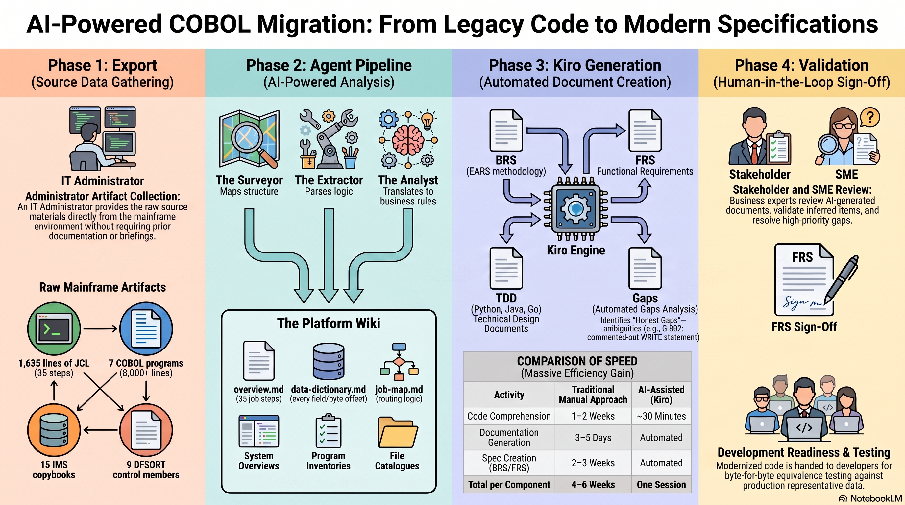

The framework is built on proven engineering methodologies — not ad-hoc prompting. Agents do the work, not the LLM. Every technique was chosen to produce outputs that are auditable, traceable, and implementable in any language.

1. EARS — Easy Approach to Requirements Syntax
EARS is a structured natural language notation for writing unambiguous, testable requirements. Developed at Rolls-Royce for safety-critical systems, it uses fixed sentence patterns with the keyword SHALL.
When reverse engineering COBOL, the extracted business rules must be:
- Technology-agnostic — they describe what the system does, not how
- Unambiguous — one interpretation only
- Testable — each rule can be verified with a specific test case
- Traceable — each rule links back to source code and forward to implementation
Example (BR-018): "The billing deduplication process SHALL only run during the daily processing path (i.e., when the current processing month is the same as the previous processing month)." → Traces to source line 442.
The Five Patterns
| Pattern | Template | Use When |
|---|---|---|
| Ubiquitous | The system SHALL [action] | Always-active constraint |
| Event-driven | WHEN [event] the system SHALL [action] | Triggered by occurrence |
| Unwanted behaviour | IF [condition] THEN the system SHALL [action] | Error/exception handling |
| State-driven | WHILE [state] the system SHALL [action] | During a persisting condition |
| Optional | WHERE [feature] the system SHALL [action] | Environment-specific logic |
2. Nine-Section Specification Format
A standardised document structure ensuring every specification covers the same ground, regardless of who writes it.
| # | Section | Key Question |
|---|---|---|
| 1 | Overview | What is this component and where does it fit? |
| 2 | Inputs | What goes in? |
| 3 | Outputs | What comes out? |
| 4–6 | Rules / Requirements / Design | What does it do / How does it work? |
| 7 | Error Handling | What happens when things go wrong? |
| 8 | Constraints | What must be true for this to work? |
| 9 | Traceability | Where did this come from and where does it go? |
Why Section 7 matters: In legacy COBOL, error handling is often absent (ABEND on unexpected condition), implicit, or inconsistent. By forcing explicit error behaviour in every spec, the modernised system doesn't inherit undefined behaviour.
3. Multi-Language Technical Design
The AI doesn't just describe the past — it designs the future. Because business rules are technology-agnostic, technical designs can be generated in multiple languages from the same BRS:
| Language | Best For |
|---|---|
| Python | Rapid data enrichment, complex analytics, prototyping |
| Go | High-concurrency, low-latency processing, single-binary deployment |
| Java | Standard enterprise deployment, integration with existing JVM services |
Technology choice becomes a strategic decision made after analysis — not a constraint imposed before understanding.
4. Phased Delivery with Quality Gates
The biggest risk in COBOL modernisation is moving to implementation before analysis is complete. Phased delivery with explicit gates prevents this:
| Phase | Gate (must pass before next phase) |
|---|---|
| Source Discovery | "All referenced artefacts are available" |
| Full Analysis | "No missing pieces, all branches understood" |
| Wiki Generation | "Every fact is source-referenced and confidence-marked" |
| Spec Generation | "All 9 sections present, traceability unbroken" |
| Gap Resolution | "All HIGH-priority gaps resolved with SME" |
| Implementation | "Byte-identical output confirmed by equivalence test" |
Proactive risk reduction: The AI identifies missing artefacts before analysis begins — preventing the costly mid-project stalls typical of manual discovery.
5. Gap-First Honesty & Transparency
A common failure mode in reverse engineering:
"I think I understand what this does" → proceeds to implement → produces wrong output
The framework's approach:
"I don't fully understand what this does" → flags it as a GAP → proceeds with everything else → resolves the gap with SME input before implementing
In our PoC, the AI identified instances where WRITE statements were commented out in the COBOL source, causing silent record drops. In a traditional modernisation, these errors are often ported to the new system. By surfacing these upfront, the framework ensures transparency — moving from simply "running a legacy process" to owning the business logic that governs every transaction.
6. Equivalence Testing
The new system must produce byte-identical output to the COBOL before any "improvements" are made — this is non-negotiable, and it's the only assertion that requires zero assumptions about downstream consumers. Once proven equivalent, you can make deliberate, documented changes, each with a decision log entry explaining why the deviation is acceptable.
7. Human-in-the-Loop: Empowering, Not Replacing
The AI accelerates the heavy lifting of analysis. It empowers rather than replaces your professionals.
| Capability | AI Does | Human Does |
|---|---|---|
| Read thousands of lines of COBOL | ✓ Fast, thorough | Slow, error-prone |
| Identify patterns and extract rules | ✓ Consistent | Variable quality |
| Generate structured documentation | ✓ Tireless | Time-consuming |
| Validate rules against business intent | ✗ No business knowledge | ✓ Domain expertise |
| Decide architectural approach | ✗ No strategic context | ✓ Knows team/budget/infra |
| Resolve ambiguities in code | ✗ Cannot know intent | ✓ Can ask original authors |
| Provide test data | ✗ No production access | ✓ Operations teams |
| Approve for production | ✗ Cannot accept risk | ✓ Risk decision authority |